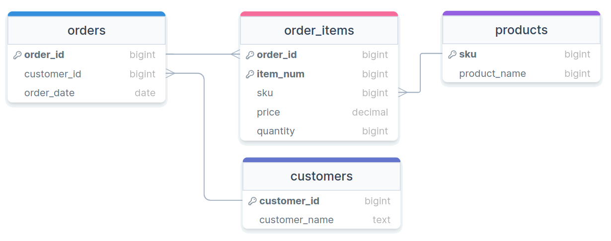

Jed Rembold
Wednesday, October 2, 2024
One of the commands below to create a table is valid. Which is it?
CREATE TABLE rev_a (
"name" TEXT PRIMARY KEY,
"year" INT PRIMARY KEY,
"class" TEXT
);CREATE TABLE rev_a (
"name" TEXT UNIQUE NOT NULL,
"year" INT,
CHECK("year" != 2022),
"class" TEXT
);CREATE TABLE rev_a (
"name" TEXT,
"year" INT,
"class" TEXT REFERENCES other,
CONSTRAINT "name" PRIMARY KEY );CREATE TABLE rev_a (
"name" TEXT,
"year" INT,
"class" TEXT,
PRIMARY KEY ("name"),
UNIQUE ("year","class"));Postgres will automatically index any column that is a primary
key or which has the UNIQUE
constraint
You can choose to set up indexes on other columns as well, but do so outside of the table creation
CREATE INDEX |||index_name||| ON |||table_name||| (|||col_name|||);If you decide you want to remove an index, you do so using the index name:
DROP INDEX |||index_name|||;EXPLAIN keyword to give
you information about what the database is doing in the backgroundEXPLAIN ANALYZE will also give you
timing information about how long it took a query to runEXPLAIN always comes at the start of
your queryEXPLAIN ANALYZE reports to you the time
it took the server to process the query, not necessarily the time it
took your client to finish getting and rendering the response!
EXPLAIN ANALYZE
{ "OrderID": 100,
"OrderItems": [
{
"sku": 1,
"price": 10,
"quantity": 1,
"name": "Thingmajig"
},
{
"sku": 2,
"price": 25,
"quantity": 2,
"name": "Whatchamacalit"
}],
"CustomerID": 5,
"CustomerName": "Jed Rembold",
"OrderDate": "2022-11-09" }| OrderID | OrderItems | CustomerID | CustomerName | OrderDate |
|---|---|---|---|---|
| 100 |
|
5 | Jed Rembold | 2022-11-09 |
| OrderID | Sku | Price | Quantity | ProductName | CustomerID | CustomerName | OrderDate |
|---|---|---|---|---|---|---|---|
| 100 | 1 | 50 | 1 | Thingmajig | 5 | Jed Rembold | 2022-11-09 |
| 100 | 2 | 25 | 2 | Whatchamacalit | 5 | Jed Rembold | 2022-11-09 |
| OrderID | ItemNum | Sku | Price | Quantity | ProductName | CustomerID | CustomerName | OrderDate |
|---|---|---|---|---|---|---|---|---|
| 100 | 1 | 1 | 50 | 1 | Thingmajig | 5 | Jed Rembold | 2022-11-09 |
| 100 | 2 | 2 | 25 | 2 | Whatchamacalit | 5 | Jed Rembold | 2022-11-09 |
| OrderID | CustomerID | CustomerName | OrderDate |
|---|---|---|---|
| 100 | 5 | Jed Rembold | 2022-11-09 |
| OrderID | ItemNum | Sku | Price | Quantity | ProductName |
|---|---|---|---|---|---|
| 100 | 1 | 1 | 50 | 1 | Thingmajig |
| 100 | 2 | 2 | 25 | 2 | Whatchamacalit |
ProductName depends on
SkuCustomerName depends on
CustomerID| Sku | ProductName |
|---|---|
| 1 | Thingmajig |
| 2 | Whatchamacalit |
| CustomerID | CustomerName |
|---|---|
| 5 | Jed Rembold |
| OrderID | ItemNum | Sku | Price | Quantity |
|---|---|---|---|---|
| 100 | 1 | 1 | 50 | 1 |
| 100 | 2 | 2 | 25 | 2 |
| OrderID | CustomerID | OrderDate |
|---|---|---|
| 100 | 5 | 2022-11-09 |

Suppose you wanted to track your Spotify playlist information in your own database. Questions you may want to be able to answer might include:
In groups of two or three, sketch out ER diagrams that would allow all these questions to be answered. Your tables should include primary keys and foreign keys where appropriate, and be normalized as best as you are able.
Online sketching resources include: drawsql, visual-paradigm, or DrawIO